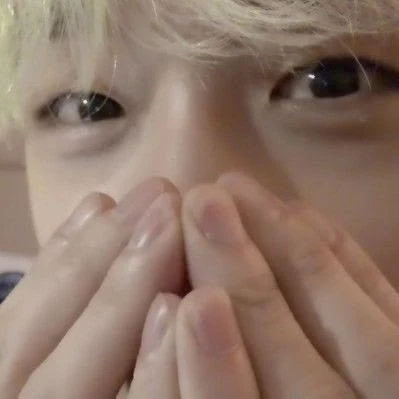

ABOUT / 1997.10.03STAY'S NOTEBOOK ↗

LÍDER · PRODUTOR · ARTISTABANG
BANG
CHAN ✦
방찬 · Christopher Bang
Bang Chan é integrante e líder do Stray Kids. Nascido em 3 de outubro de 1997, também faz parte do 3RACHA, trio de criação musical com Changbin e HAN. Além de subir ao palco, participa da composição e produção de músicas do grupo.
♪ music maker✳ 3RACHA☾ Stray Kids